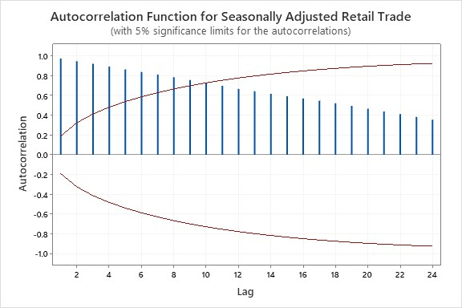
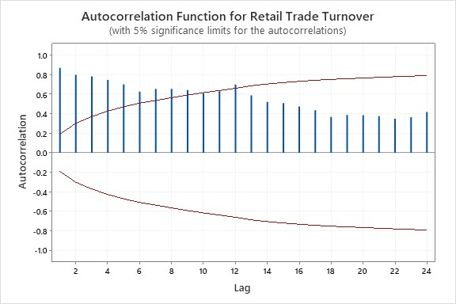
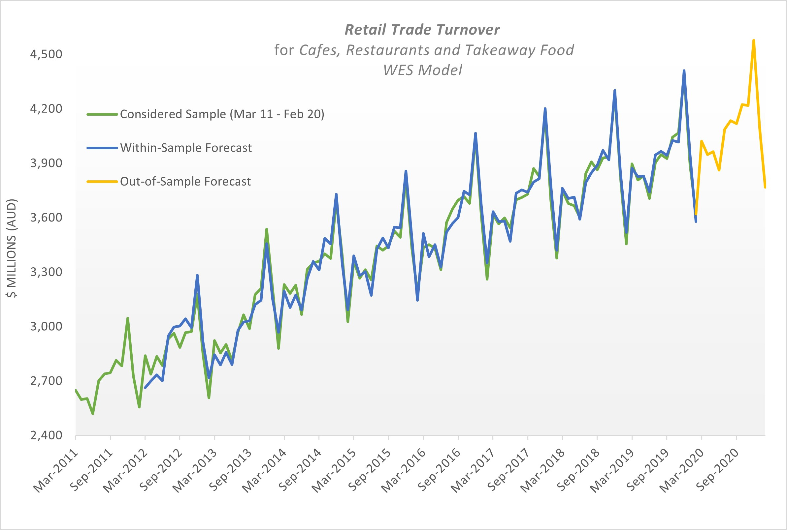
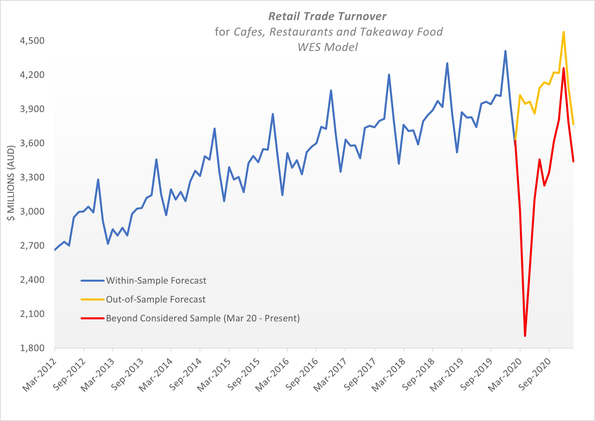
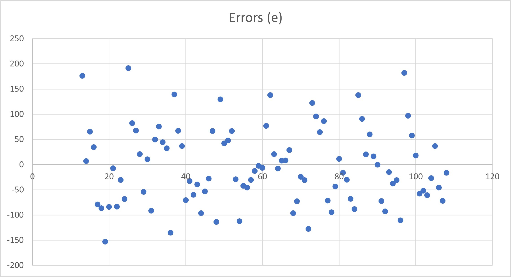
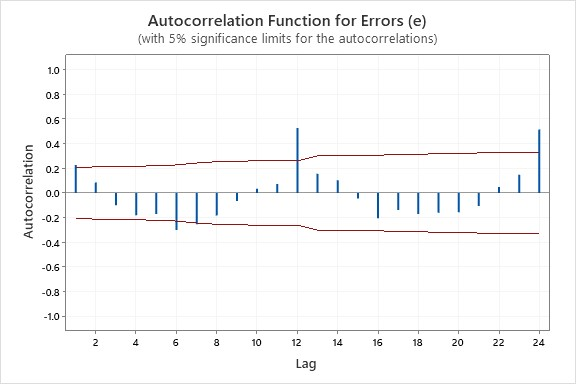

Retail Turnover Forecasting
Attribution
This report is based on original and seasonally adjusted data, collated by the ABS, for retail turnover by cafes, restaurants and takeaway food services in Australia from March 2011 to February 2021. The data is an estimate calculated from survey data collected by the monthly 'Retail Businesses Survey' which canvases 500 large businesses and 2700 smaller businesses (Australian Bureau of Statistics, 2021).
Scope
Two exponential smoothing models were used to generate the forecasts, Holts exponential smoothing (HES) and Winters exponential smoothing - Multiplicative (WES). Exponential smoothing methods consider a weighted average of past observations when predicting future values within a time series, with newer observations weighted more than older (Hyndman, 2008). The systematic components of the data dictate the appropriate model. HES is used for data with a trend component, WES is used for data with a trend and seasonal component.
Application
The following correlograms were used to identify the systematic components within the data set so that an appropriate forecasting model could be applied.
Correlogram 1.0
Correlogram 1.0 plots the ACF of the seasonally adjusted retail trade turnover estimates and shows the autocorrelation coefficient start off large and decrease gradually for each successive lag. This is typical of data with a trend component and as such the HES model should be applied.
Correlogram 2.0
Correlogram 2.0 plots the ACF of the original retail trade turnover estimates and shows both a trend and seasonal component and therefore the WES model should be applied. The trend component is evident by the declining of the autocorrelation coefficient after successive lags. The seasonal component is evident by the spikes at constant periods, in this case it is evident at lag 1, 12 and 24.
The HES model is comprised of three equations. These equations estimate the level and trend of the data and are weighted by the smoothing constants \(\alpha \) and \(\beta \). The equations are:
The WES model is comprised of four equations which estimate the level, trend and seasonal components weighted by smoothing constants \(\alpha \), \(\beta \) and \(\gamma \). The equations are:
Analysis
The following forecast was generated using the WES model.
The considered sample shows a consistent upwards linear trend. Also, a seasonal component is evident with spikes at the December period and lows at the February period. As the Seasonal component is relative to the level of the time series the seasonality is multiplicative.
The within-sample forecast follows the considered samples overall trend and the major spikes in seasonality. The within-sample forecast fits the observed data for later periods better than earlier ones. The out-0f-sample forecast shows a projection of the past trend and seasonal components with the low point in February and high point in December. The forecast continues the multiplicative structure of the time series.
The above graph shows the WES forecast and the beyond considered sample observations. The beyond considered sample has a different trend and the seasonal components while evident are more varied in magnitude. The data for this period is significantly different from that forecast using the WES model.
Articulation of Issues
The scatter plot of the errors for the WES method shows a non-random distribution around zero indicating a level component within the errors.
The correlogram of the errors shows a significant autocorrelation at lag one, reinforcing the presence of a level component unaccounted for by the model.
The MSE (mean squared error) for the WES model when \(\alpha \)=0.5, \(\beta \)=0.2 and \(\gamma \)=0.1 was 5656.11. When the model was optimized using the excel solver function the MSE was reduced to 3112.82 with \(\alpha \)=0.422, \(\beta \)=0.0 and \(\gamma \)=0.6. The WES model with these smoothing constants produces a more accurate model.
Critique
The COVID 19 pandemic resulted in the introduction of government regulations in March 2020 that “impacted the ability for businesses to trade as normal” (Australian Bureau of Statistics, 2021). This explains the significant reduction in retail turnover within this sector during early 2020. As the WES model does not account for such factors the forecasts for 2020 and 2021 are inaccurate.
Exponential smoothing models use components of historic data to project future values. The models do not account for real-world changes within the workplace (e.g., changes in legislation that effect business) and therefore may generate inaccurate forecasts. For business forecasts to be effectively utilized to make decisions, the models assumptions and shortcomings need to be considered when evaluating the models results.
Position
Considering the information presented the WES model projected a reasonable forecast for the expected retail turnover extrapolating past trends and multiplicative seasonal components from the sample data. Upon evaluation of the model it was found the level component had not been completely accounted for as such the application of alternate forecasting methods such as decomposition may prove to be more accurate.
The model proved to be inaccurate due to unforeseeable events which changed consumer behavior. It is important that future forecasts take into consideration the introduction/withdrawal of government stimulus which may affect future consumer behavior.
Reference
AUSTRALIAN BUREAU OF STATISTICS. 2021. Retail Trade, Australia methodology [Online]. Available: https://www.abs.gov.au/methodologies/retail-trade-australia-methodology/feb-2021 HANKE, J. E., WICHERN, D. & WICHERN, D. W. 2013. Business Forecasting, Harlow, Pearson Education UK. HYNDMAN, R. J. 2008. Forecasting with exponential smoothing : the state space approach, Berlin ;, Springer.